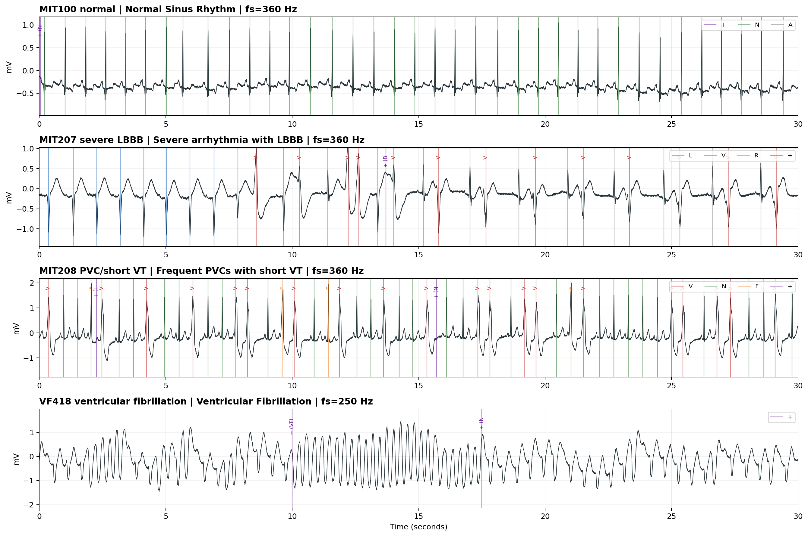

Lead II waveform
ECG_scenarios / Realtime_ecg_demo
MIT100 normal
30 秒 Lead II 实时预览，R-R 间期稳定，形态清晰。
Stable
Source overview
Scenario dataset snapshot

ECG_scenarios / Realtime_ecg_demo
30 秒 Lead II 实时预览，R-R 间期稳定，形态清晰。
Lead II waveform
Source overview
